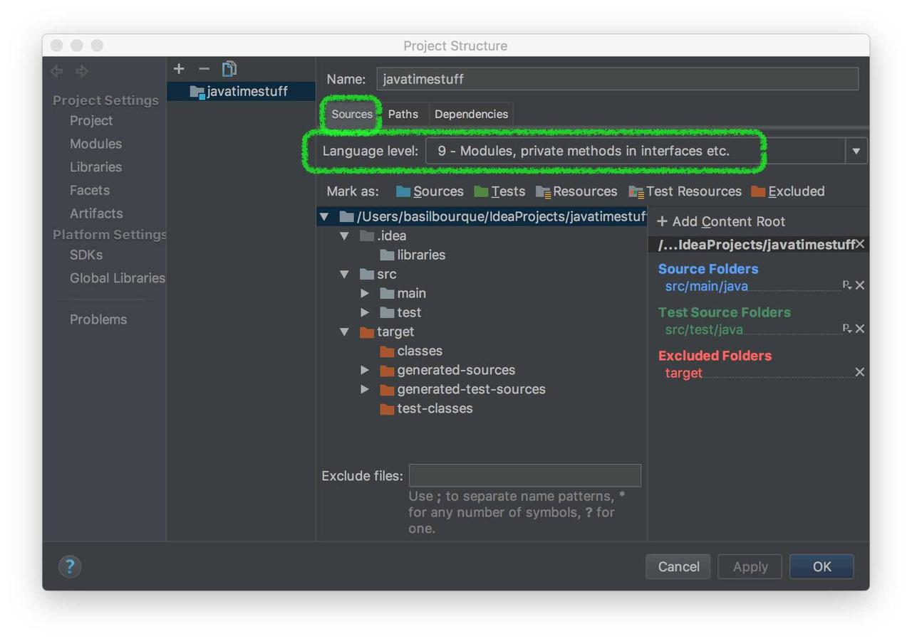

Error:java: invalid source release: 8 in Intellij. What does it mean?
Im trying to compile some code in I'm using Intellij Ultimate 13.1.4, but I get the following error and I have no idea what it means:
Information:Using javac 1.7.0_55 to compile java sources Information:java: Errors occurred while compiling module 'Example' Information:Compilation completed with 1 error and 0 warnings in 3 sec Information:1 error Information:0 warnings Error:java: invalid source release: 8
My guess is that its something related to Java 8 vs Java 7, but I have no idea
what specifically. I've tried to Google around for this message, but they
either talk about javac or target release, so it doesn't exactly seem to
apply.
Answer
I had the same issue when "downgrading" a project from Java 8 to Java 6. The reason was that it was not changed at all places in IntelliJ.
In IntelliJ 13.1.4 I had to change Java and SDK version on the following places not to get this error:
- File -> Project Structure -> Project Settings
- File -> Project Structure -> Module Settings -> Tab: Sources: Language Level
- File -> Project Structure -> Module Settings -> Tab: Dependencies: Module SDK
- File -> Settings -> Compiler -> Java Compiler -> Target bytecode version




The last bullet was the one that was not updated in my case. Once I changed this, the error disappeared.
Suggest
Check your pom.xml first (if you have one)
Check your module's JDK dependancy. Make sure that it is 1.8
To do this,go to Project Structure - > SDK's
Add the path to where you have stored 1.8 (jdk1.8.0_45.jdk in my case)
Apply the changes
Now, go to Project Structure - >Modules
Change the Module SDK to 1.8
Apply the changes
Voila! You're done